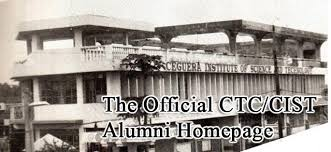
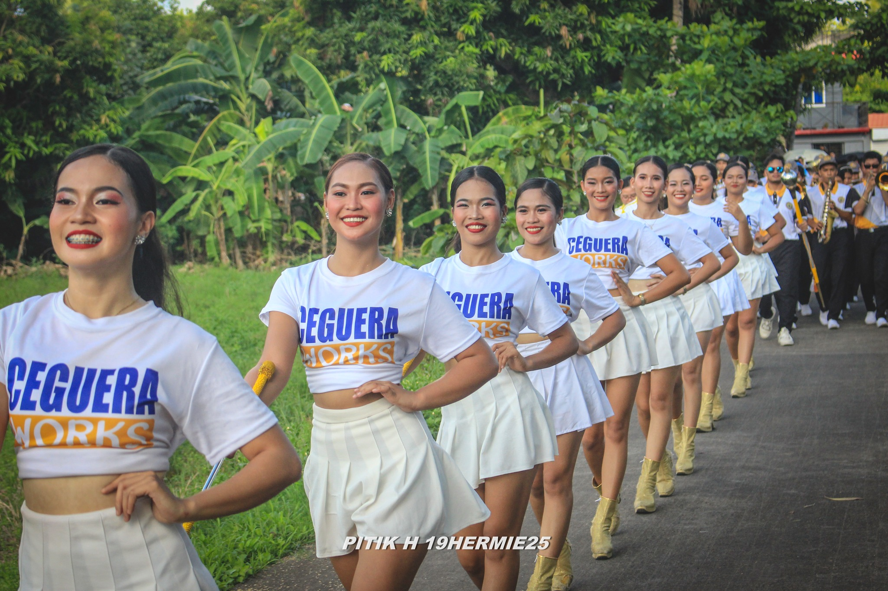
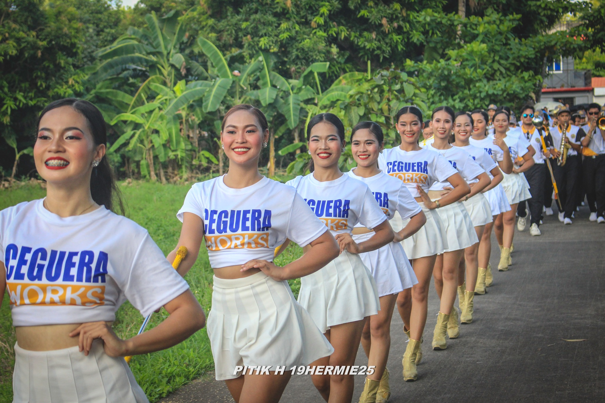

History
Ceguera Technological Colleges (CTC) in Iriga City, Philippines, was founded in 1984 by Julio D. Ceguera as the Ceguera Institute of Science and Technology (CIST) to provide affordable technical-vocational education. Renamed in 1998 to reflect its expansion into tertiary education, it remains a key provider of technical, vocational, and business programs in the Rinconada/Partido area
 
